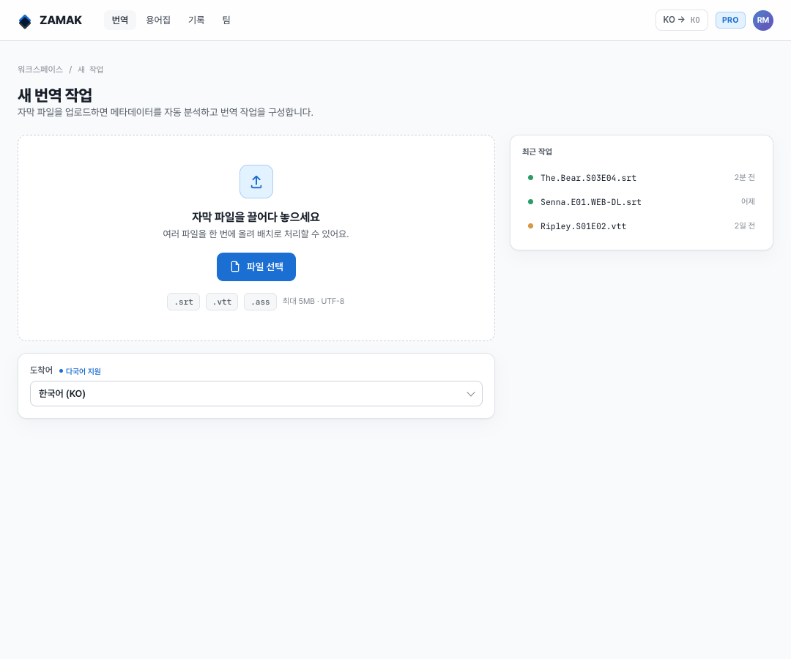
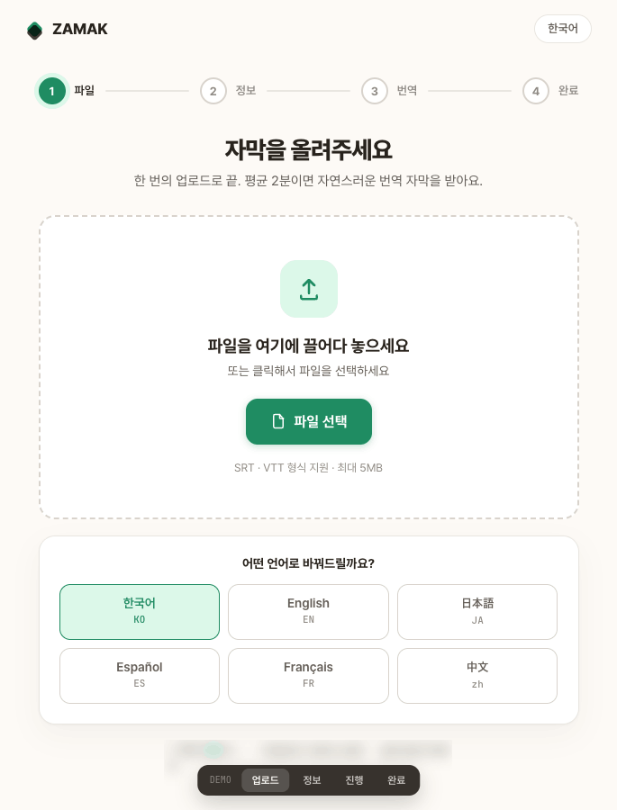

ZAMAK Pro — 워크스페이스형
반복·대량 작업에 최적. 상단 내비, 최근 작업 기록, 우측 설정 레일이 한 화면에. 모노 타이포와 비용·토큰 readout으로 “도구”의 신뢰감을 줍니다.
- 2단계를 1워크스페이스로 — 정보 입력과 번역 설정을 좌우로 통합
- 기술적 readout — 예상 소요·줄 수·토큰, 모델별 품질 미터
- 배치·용어집·팀 등 B2B 확장을 전제로 한 내비게이션

덕질 요소(이모지·밈)를 걷어내고 “ZAMAK = 정밀하게 합금된 자막 번역 엔진”이라는 한 줄로 재정의했어요. 두 시안은 같은 브랜드·같은 4단계 플로우(업로드 → 정보 → 진행 → 완료)를 공유하되, 누구를 먼저 모실지가 다릅니다. 공통 개선점: 도착어 선택을 전면에 배치(다국어 확장 대비), 메타데이터 AI 자동 감지 표시, 진행 화면에 실시간 번역 스트림, 완료 화면에 요약·미리보기·원클릭 다운로드.
반복·대량 작업에 최적. 상단 내비, 최근 작업 기록, 우측 설정 레일이 한 화면에. 모노 타이포와 비용·토큰 readout으로 “도구”의 신뢰감을 줍니다.

처음 와도 헤매지 않게. 한 번에 하나씩, 큰 타이포와 안심 카피로 안내하고, 어려운 옵션은 ‘고급 설정’에 접어 둡니다. 추천값이 기본.
